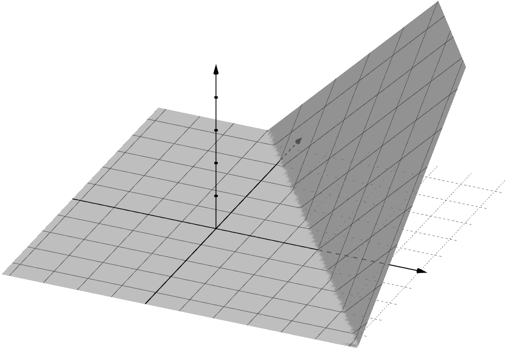

Training Fully Connected Neural Networks is ∃R-Complete. The problem is known as the risk minimization problem in machine learning. They show that even very simple networks are difficult to train. They generalize a recent result by Abrahamsen, Kleist and Miltzow [NeurIPS 2021]. This result falls into a recent line of research that tries to unveil that a series of central algorithmic problems from widely di-erent areas of computer science and mathematics are ‘R-complete’
The hardness result inherently relies on choosing a network architecture that is particularly difficult to train. In practice, fully connected two-layer neural networks are arguably the most basic ones and they are often part of more complicated network architectures The result by Abrahamsen, Kleist and Miltzow could easily be trivially trained with fully connected neural networks, as they reduce to matrix factorization. They can show hardness even for the most-basic case with the following properties:
An algorithm by Arora, Basu, Mianjy, and Mukherjee solves empirical risk minimization for 2-layer ReLU networks. It was later extended to a more general class of loss functions by Froese, Hertrich, and Niedermeier The running time is exponential in the number of neurons in the hidden layer and in the input dimension, but polynomial in number of data points if the former two parameters are considered to be a constant.
A neural network is defined as a directed acyclic graph. Sources and sinks are called input and output neurons. The symbol inside the hidden neurons expresses the ReLU activation function. In case that there is only one hidden layer, they speak (confusingly) of a two-layer neural network. The name stems from the interpretation that there are two layers of edges, even though the vertical set is split into three layers. They also use ReLUs for the output neurons, as they do not want to confuse the reader by considering too many variants of neural networks.
The problem Train-F2NN is ∃R-complete, even if there are exactly two input neurons and exactly two output neurons. The number of hidden neurons is a constant fraction of the number of data points. The set of labels used in the reduction is the small constant 13.5. The precise complexity of training fully connected two-layer neural networks with only one-dimensional input and multi-dimensional output remains unknown. They wonder whether it is possible to show this is true from a purely mathematical perspective.
The ReLU activation function is currently still the most commonly used activation function in practice. The methods are probably easily Adaptable to other piecewise linear activation functions, for example, leaky ReLUs. For the Sigmoid and soft ReLU function it is not even clear whether the problem is decidable, as exponential functions and exponential functions are not computable on the real RAM. They consider it one of the strengths of the reduction that it is relatively simple and could be taught as part of a master’s-level course in computational geometry, machine learning or complexityity.
In principle, arbitrary neural network architec-tures can be trained to approximate optimality via linear programs with size linear in the size of the data set, but exponential in the architecture size. This way of modelling the problem seemingly allows to place the neural network training problem 'in NP' But guessing the digits of the solution in binary is in no way a practical algorithm to solve these problems. The complexity class 'ER' has gained a lot of interest in recent years. The underlying machine model is the word RAM (or equivalently, a Turing machine) and not the real RAM
The most popular model to formalize learnability of the generalization error is probably approximately correct (PAC) learnability. They refer to this survey for an extensive discussion on the mathematics of deep learning. For the concept class of neural networks, empirical risk minimization is hard, but proper PAC learnability is possible. For example, Chen, Klivans, and Meka showed the tractability of learning a ReLU network under certain assumptions including Gaussian data and Lipschitz continuity of the network.
They use a similar proof technique as is usually used to prove NP-membership. The three main ideas of the proof are concerned with encoding variables, addition, and nonlinear constraints. The key idea for encoding constraints between variables is that they can “read” the value of a variable using data points. To encode an addition constraint, they can enforce the function to have a fixed value at a point in the intersection of multiple variable-encoding gadgets. The construction works for the nonlinear constraint xy + x + y = 0.
Each variable-encoding gadget as seen in Figure 4 is extended into a stripe in R2. Figure 4 shows only an orthogonal cross section of this stripe. To be able to intersect multiple gadgets, they need a second input dimension. The location of all of the breaklines of f only depend on the weights and biases in the first layer of the neural network. They therefore make use of the ability to copy the value of one variable encoding gadget to another, using only binary addition.
In this section they introduce ETR-NN, a restricted variant of ETR for neural networks. ETR is the decision problem whether a sentence of the form grotesque∃X1,..., Xn is a conjunction of constraints such that, for X, Y, Z, Z and Xn, each constraint is of exactly certain type of type. They use a recent result of Miltzow and Schmiermann to prove ETR's hardness.
They present the reduction for Train-F2NN. The reduction is mostly geometric, so they start by reviewing the underlying geometry of the two-layer neural networks considered in the paper in Section 4.1. They conclude that the restricted variant from the statement is indeed ∃R-complete. Theorem 3.2 is the proof of Theorem3.3.2. They also present the reduction of the reduction in the form of a device that trains neural networks with not fully connected architectures.
The goal of this section is to build a geometric understanding of f(·, Θ). They point the interested reader to these articles investigating the set of functions represented by different architecturalarchitectures of ReLU networks. The i-th hidden ReLU neuron vi realizes a function that is a continuous piecewise linear function. The domain R2 is partitioned into two half-planes, touching along a so-called "breakline" The left first part is called the inactive region, the right sloped part is the active region.
They show the hardness of Train-F2NN (Definition 2) by giving a polynomial-time reduction from ETR-NN to Train F2NN. The reduction starts with an ETR-NN instance and outputs an integer m and a set of n data points such that there is a fully connected two-layer neural network N with m hidden neurons computing f(·, Θ) In the reduction they construct a data set which can be. be described by a continuous piecewise linear function with m breaklines.
The semantic meaning of a gadget is fully determined by the distances between its parallel breaklines. Weak data points are there to ensure that the gadgets used in the reduction encode variables with bounded range and that they can have features that are only active in one output dimension. They describe all gadgets in isolation and consider the interaction of two or more gadgets only where it is necessary. After all gadgets have been introduced, they describe the global arrangement of the gadgets in Section 4.4.3.5 and 4.6.
The construction contains the following types of gadgets: variable gadgets representing a value for each variable in the ETR instance, more variable gadgets copying these values and realizing linear constraints at intersections. Other gadgets are nonlinearity gadgets enforcing that two variables fulfill the nonlinear constraint of the ETR-NN instance, and so-called cancel gadgets which they use to realize weak data points. They use these observations to prove that the data lines enforce certain breakpoints of a certain type with a prescribed orientation and position.
A levee consists of fthe parallel breaklines b1, b2, b3, b4, numbered from left to right. The gradient of f(·, Θ) between b1 and b2 is orthogonal to the breaklines and oriented towards b2. The slope is always positive, so to realize values in the interval [−1, 1], they say that a slope sX encodes the value. This part is thus fixed to a slope of 1 for simplicity.
The ETR-NN instance has a constraint X ≥ 0 for some variable X, then the levee has a value in [−1, ∞) Levee represents a value to be used in the constraints. They conclude that with twelve data lines and one weak data point they can enforce fthe parallel breaklines forming a levee, with a minimum slope of 1 and a maximum slope of 3, thus encoding a value of 0.3.2. The exact positions of b1 and b2 depend on each other. For example, p1, p2, p3, p4, p5, p6, p7 are collinear and p10 are coll
Figure 10 shows a cross section of a levee and its measuring lines. If they know the value of f(pu, Θ) and further that pu belongs to a single levee only, they get X = sX − 2 = f(pu, pu) − 5 for the value represented by the levee. Similarly, for a point pl on the lower measuring line the contribution to f(pl, puo) is 3 − sX. Figure 10
For disjoint subsets A and B of the variables they can use an additional data point p to enforce a.protective linear constraint of the form. The value of the constant c can be chosen arbitrarilyarbitrarily. The data point is placed on a measuring line of each involved variable. For all variables in A the data point must be on the upper measuring line. For variables in B the data points p must be. on the lower measuring line, so it contributes 3 + sA to f(p, Θ) The overall contribution of the levees of all involved variables adds up to.
The point p is placed at the intersection of two levees corresponding to two variables X and Y, and their measuring lines (black, dashed), and receives label 6 to enforce the constraint X − Y = 0. If the upper and lower measuring lines for X, Y, as well as the lower measuring line for Z intersect at one point p, then imposing label 11 on p enforces a constraint of the form X + Y = Z. The constraint is imposed by imposing label 6 on p on p to enforce a constraint.
An instance of ETR-NN can only have three types of linear constraints. Surprisingly they can be encoded with data points using only two different labels. To encode the ternary addition constraint X + Y = Z the data-point has label 11. For the constraints X = 1 and Y = Y the data point has label 6 in both cases. Non-collinear triples of points force breaklines in-between them. They use this relaxation to realize nonlinear constraints in the following section.
They define a nonlinearity gadget using 13 parallel data lines, positioned relatively to each other. The fact that the breakline b2 is shared between the two levees enforces the desired nonlinear relationship g(X, Y ) = XY + X + Y = 0 between the variables X, Y. They will show below how they can analyze the relationship between these two variables carried on the two breaklines. The last remaining remaining breakline must be concave in output dimension 1 and convex between ℓ4 and 2.
In terms of variables, the constraint is therefore 3(Y + X + Y) + 3(X + 2) = 0, which is the desired constraint. To apply this constraint to two variables X and Y carried on two normal levees, they can build a nonlinearity gadget intersecting the levees of Y and X. The gadget encodes the constraint that the distances must add up to 3, and thus the constraint must be 3+0-0-3Y.
Two weak data points (pX and pY) are enforcing equality between the corresponding variables on the nonlinearity gadget and the normal levees. They build a linear constraint enforcing the two variables to be equal, whichis only “active” in the first output dimension. In the second output dimension the data point gets the trivially fulfilled label ≥ 0. At the intersection with the levee of Y, they build a. linear-constraint active only in the second. output dimension and label ≥0 in the first output.
A cancel gadget can be active in either one of the output dimensions, or in both of them. The cancel gadget is illustrated in Figure 15. It is used to “cancel” a weak data point in the active dimension. In the inactive dimension it does not contribute anything to f(·, Θ), all breaklines are erased (of type 0) In active dimension it contributes 0 to f in an inactive dimension and an arbitrary amount c in an active dimension to any point p with equal distance to ℓ4 and p4.
In this section, they argue that a set of data lines can be realized by replacing each data line by three data points. This in turn allows us to define the gadgets described in previous sections solely using data points. The data points form cross sections of all gadgets, similar to the cross sections shown in Figures 9, 13 and 15. They introduce three vertical lines v1, v2, v3 to the right of all intersections between the data lines. The vertical lines are placed at unit distance to one another.
They show that the only way to stab each gadget is if each breakline stabs exactly three matching breakpoint intervals. The proof is by induction on the number of gadgets. For a single gadget the claim trivially holds, it trivially does not hold true for the rest of the claim. The claim is by inductive step, they consider the lowest gadget g (on v1, v2, v3) and assume for the sake of contradiction that there is a breakline b stabbing a breakpoint interval of g on v2 and a.o (g) on v1)
To stab all 3 · k breakpoint intervals required by a gadget with only k breaklines, each breakline has to stab three matching breakpoints. The main idea is to use additional information about each breakpoint interval, namely the type of the required breakline. The proof of this claim is straightforward but tedious and can be found in Appendix A. They can therefore analyze the situation for each gadget in isolation in isolation. It also follows that within a single gadget, between the vertical lines no two breaklines can cross each other, nor can they cross a data line.
For each variable X of the ETR-NN formula, they build a horizontal ‘canonical” levee carrying this variable at the bottom of the construction. They build an array of k parallel nonlinearity gadgets intersecting all canonical levees. The complete layout of all gadgets and additional data points for the complete reduction can be seen in Figure 18. An overview over all used gadgets and constructor constructions can be shown in Table 1. The list of gadgets and data points is simplified to a single line for clarity.
Given an instance of ETR-NN, they construct a Train-F2NN instance with γ = 0 as previously described. The number of hidden neurons m is linear in the number of variables m is. The set of used labels is used in the construction of a network with m hidden ReLU neurons perfectly-perfectly-tting all the data points. The train-f2nn instance can be constructed in polynomial time, as the gadgets can be arranged in such a way that all data points (residing on intersections of lines) have coordinates which can be encoded in.